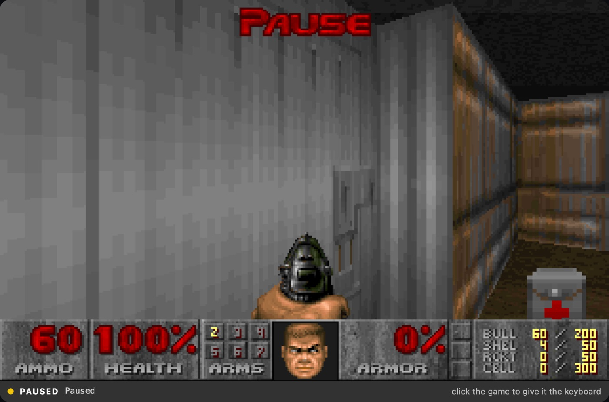
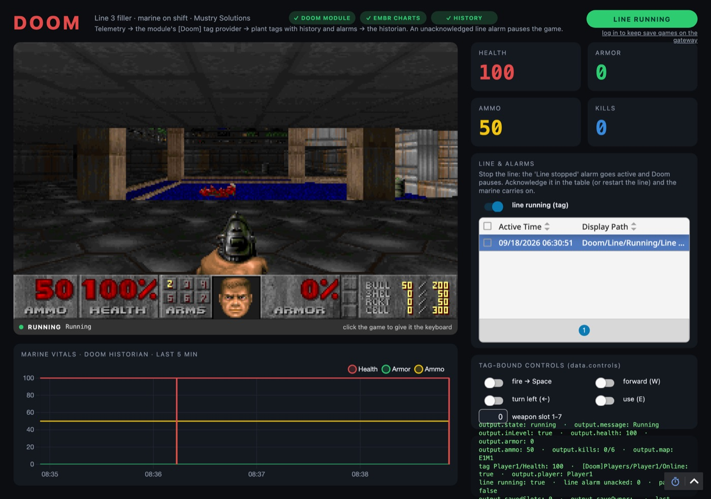

// Notes
Yes, your Ignition gateway can run Doom.
· 5 min read · Ignition
Someone always asks whether the gateway can run Doom. Ours can. A free Perspective component plays the 1993 shareware episode inside a view. Tags fire the shotgun. Alarms pause the game. The marine’s health lands in your historian next to the pump pressures. Two operators can deathmatch through the gateway.
Industrially useless. That is intentional. GPL-2.0, Ignition 8.3.6+, one component under the Mustry Solutions palette. No trial, no activation.

Line stopped · alarm active · marine waits
From the module repo
What it hooks into
- Plays Doom. Chocolate Doom compiled to WebAssembly, served by the gateway, running in the browser. Keyboard and mouse stay in the game when it has focus.
- Takes orders from tags. Boolean props for forward, fire, use and the rest. Bind them and a PLC input fires the shotgun.
- Obeys your alarms. Two-way
state.paused. Bind an active alarm and production trouble freezes the marine until someone acknowledges. - Reports back. Health, armor, ammo, kills and more stream into a
[Doom]tag provider, one folder per player. Historize it next to real process data. - Deathmatch. The gateway relays Doom’s network between Perspective sessions. Host in one browser, join from another.

Why bother
Because people ask, and because a module that is obviously useless is a clean demo of how Perspective components, tag providers and gateway services fit together. The modules that pay the bills are elsewhere. Doom is the one that gets Ignition people curious.
Want components that actually earn their keep on a plant floor? Start with the Perspective Components note.
Signed .modl on GitHub. Drop Doom on a view. Fire the shotgun from a tag.
Mustry Doom on GitHub